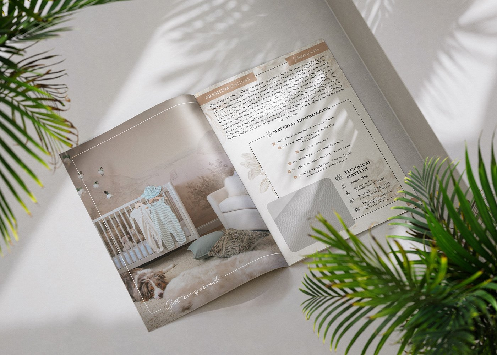
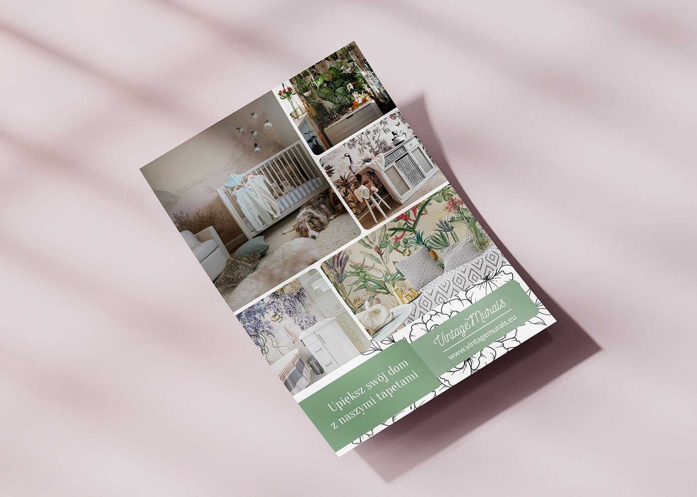
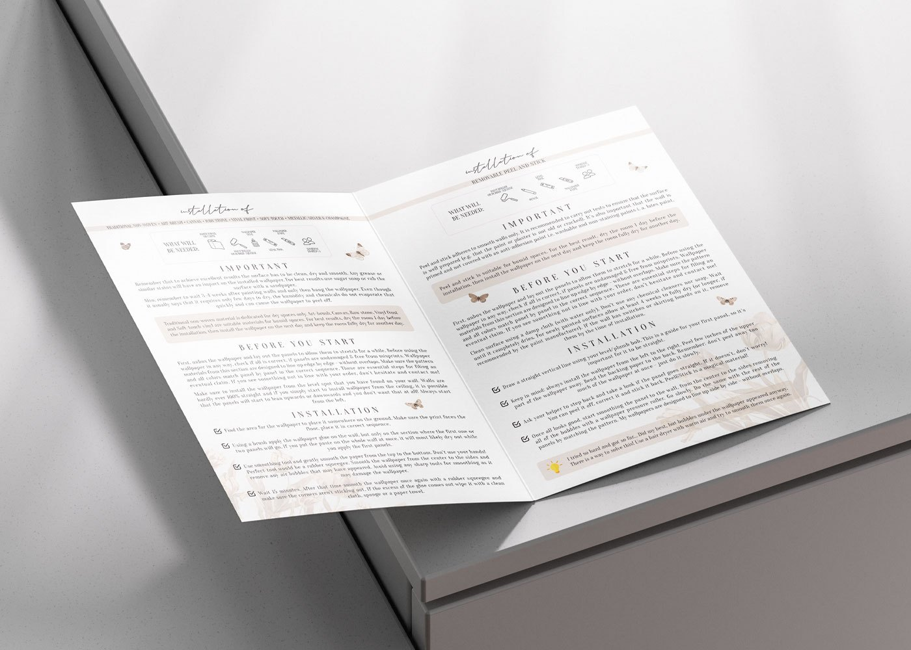
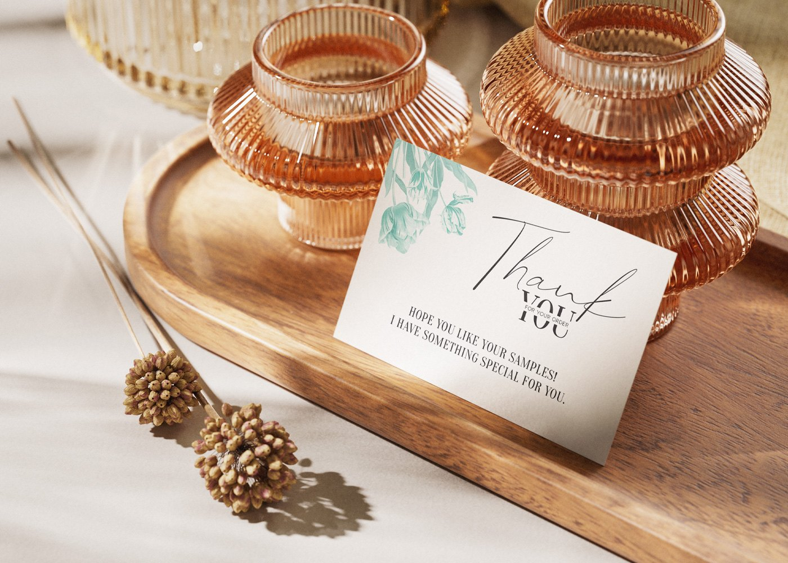
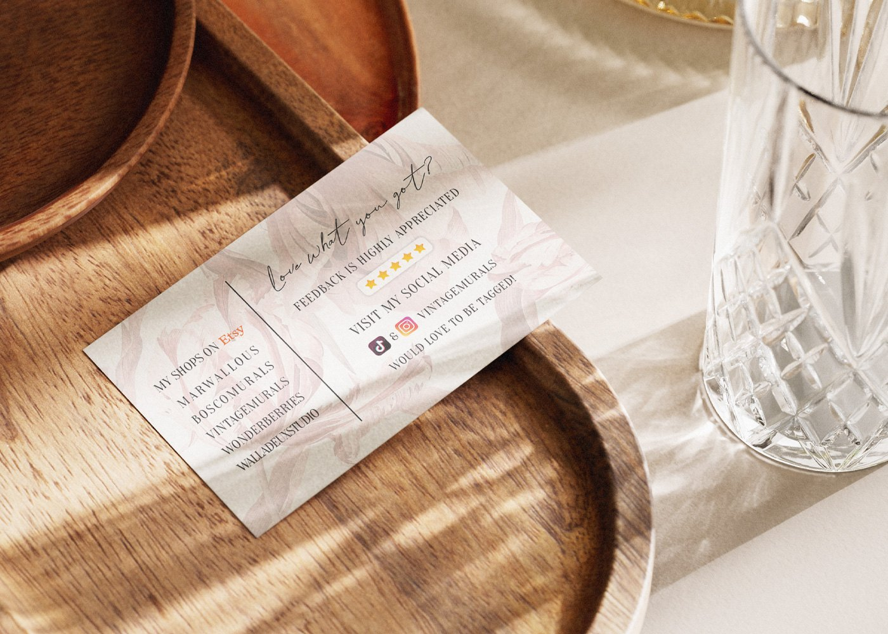
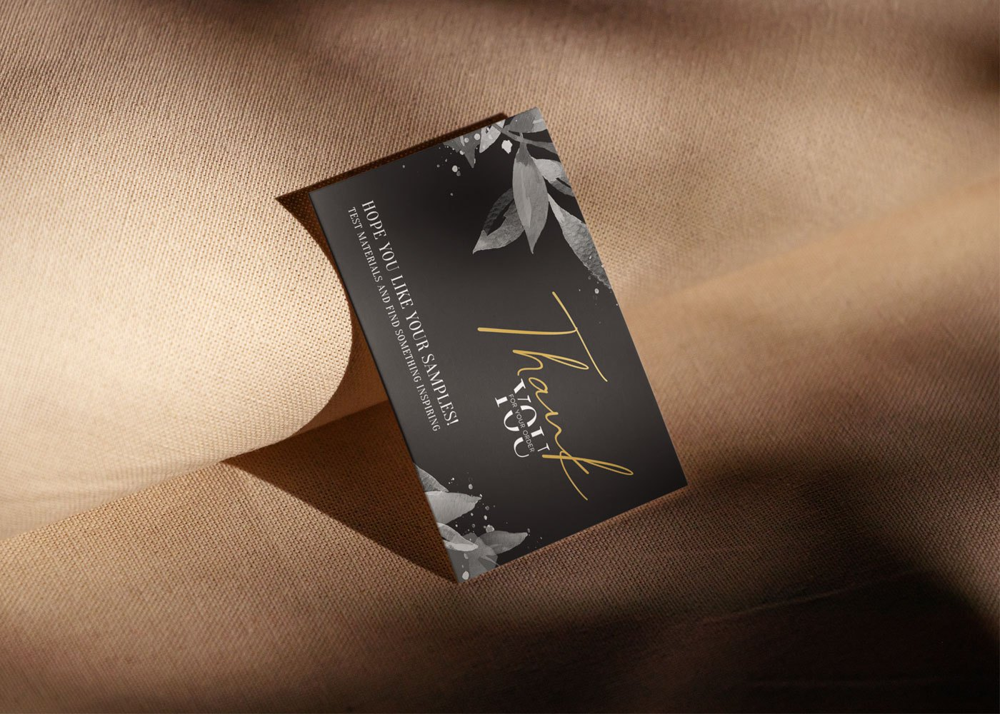
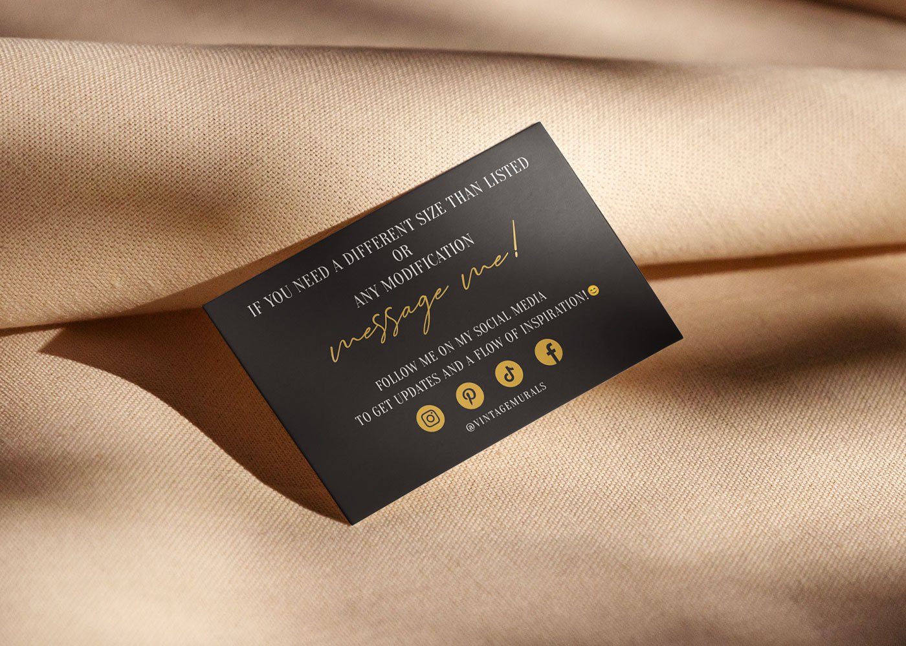

Print · wall décor
Vintage Murals — catalogue & print collateral
Printed materials for Vintage Murals, the company behind the five Etsy stores I ran: a materials catalogue, a flyer, an installation guide and cards that went into customers' parcels.
Print · wall décor
Printed materials for Vintage Murals, the company behind the five Etsy stores I ran: a materials catalogue, a flyer, an installation guide and cards that went into customers' parcels.
[Catalogue spread]

Vintage Murals sells wallpapers, murals, posters and decals all over the world, mainly through Etsy. For most customers the parcel is the only physical contact with the brand, so the printed materials had to explain the wallpaper materials, help with installation and bring customers back for another order.
I organised the catalogue around how customers choose a material. It opens with three groups – classic, premium and metallic – on a single page. Each material then gets the same layout: a real interior on the left, and a description, key benefits and technical data on the right. All interior photos come from customers, so they also work as reviews.
A5, 16 spreads, saddle-stitched, with a soft-touch cover and gloss pages inside. The copy was a joint effort: I combined information from material suppliers with what the management and I knew from customers, and refined it with AI. Besides the wallpaper materials, the catalogue also introduces the posters and 3D decals sold in the other stores.
[Cover]

[Customer interiors, posters and decals]

[Back cover]

A double-sided A5 flyer in Polish for customers in Poland. The front shows the wallpapers in real interiors, the back sums up eight reasons to choose the brand in icons and ends with a discount code for the first order.
[Front and back]

[Back with icons]

[Front]

A folded A5 guide with separate instructions for wallpapers hung with traditional glue, removable self-adhesive ones and permanent self-adhesive ones. Each part lists the tools needed, what to check before starting and the steps in order, so customers can follow it on their own.
[Cover]

[Inside]

Small cards added to orders: thank-you notes for purchases and sample packs, a review request listing all five stores, an offer of custom sizes and a discount code for the next order. They come in two styles, light with botanical illustrations and black with gold print. Returning customers used the IAMBACK code from these cards very often.
[Thank-you card]

[Discount code card]

[Review request]

[Black card with gold print]

[Custom size card]

I prepared all the print files: the catalogue as 16 spreads for saddle-stitching, the flyer and the guide in A5, and the cards with gold print. The catalogue cover is soft-touch paper, and the inside pages use the same medium-weight gloss paper as the flyer.
[Flyer, both sides]